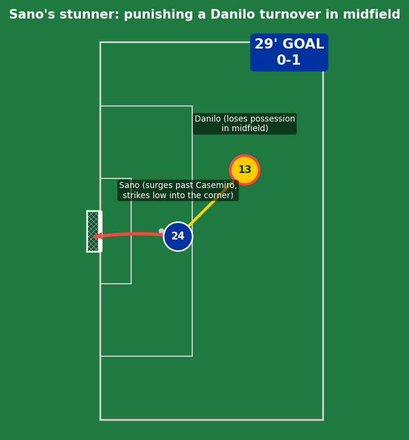
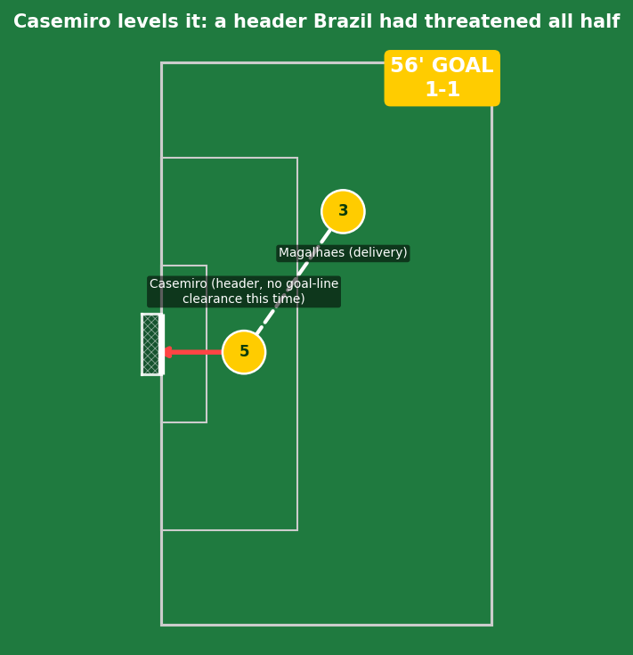
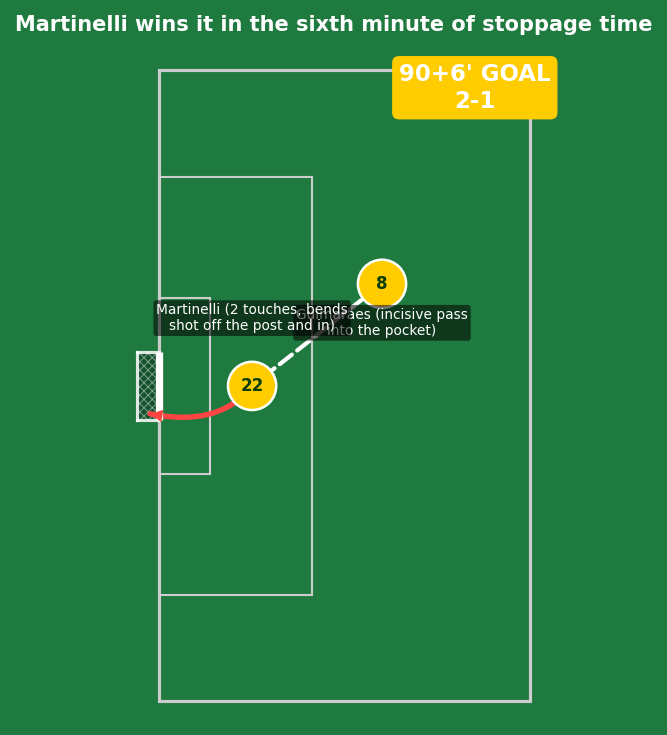
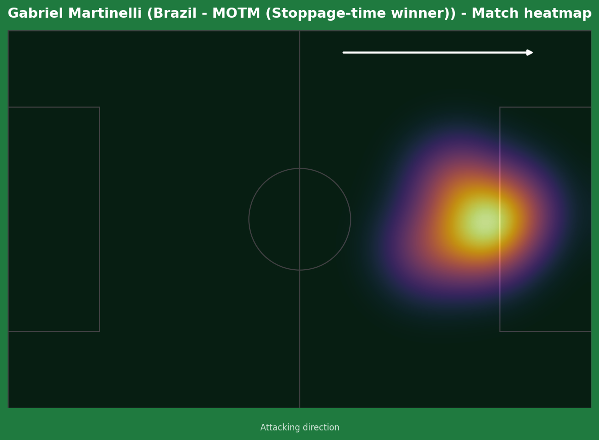

Brazil vs Japan
Japan produced a near-perfect defensive performance for an hour, absorbing total Brazilian territorial control and striking on the counter through Kaishu Sano, who punished a Danilo turnover with a sensational solo run and finish for his first senior international goal. Casemiro's header from a Gabriel Magalhaes delivery leveled it just after the hour mark, and Brazil pushed relentlessly for a winner that finally arrived deep into stoppage time - Bruno Guimaraes threading a pass for substitute Gabriel Martinelli, who needed two touches before bending a shot off the post and over the line to send Brazil through and break Japanese hearts.


Brazil (4-3-3): Alisson; Danilo, Marquinhos (c), Magalhaes, D. Santos; Casemiro, Guimaraes, Paqueta; Rayan, Cunha, Vinicius Jr. Japan (3-4-2-1): Suzuki; Tomiyasu, Taniguchi, H. Ito; Doan (c), J. Ito, Sano, Nakamura; Kamada, Maeda; Ueda.
Japan's gameplan was executed close to perfectly for long stretches - 68% Brazilian possession with almost nothing to show for it through the first half, as Moriyasu's side repeatedly dropped into a compact five-man defensive block whenever out of possession, crowding Vinicius Junior out of space every time he tried to operate inside the final third. Their goal was the platform's reward: discipline without the ball, ruthless efficiency the one time a Brazilian mistake gave them a clear lane.
Brazil's response after the break was about increased directness rather than a structural overhaul - Vinicius forcing a brilliant Suzuki save with a nutmeg-and-shot combination, Casemiro's persistence in the box finally rewarded with the equalizer, and a string of late substitutions (Endrick, Martinelli, eventually Fabinho) adding fresh legs and ultimately the matchwinner. Ancelotti's patience in not panicking after going behind, instead trusting the same approach to eventually break Japan down, was vindicated in the most dramatic way possible.
The key tactical moment was Danilo's midfield turnover that gifted Sano his goal - a single moment of carelessness against a team set up specifically to punish exactly that kind of mistake, and for an hour it looked like it might be the difference between Brazil advancing and one of the great World Cup upsets.

A goal built entirely on individual quality punishing a Brazilian error, not a structural failure. Danilo lost the ball in midfield under no extreme pressure - a moment of carelessness more than anything else - and Sano reacted instantly, surging away from Casemiro (who simply couldn't match his pace over the resulting 30-yard sprint) before drilling a precise right-footed strike beyond Alisson's reach. His first-ever senior international goal, scored in the biggest possible moment, against the heaviest possible favourites - genuinely one of the standout individual moments of the tournament so far, regardless of the eventual result.

A goal that had been threatening for several minutes - Brazil had already seen one goal-line moment scrambled away by Japan's defense moments earlier. This time, Gabriel Magalhaes's delivery found Casemiro unmarked, and his header gave Suzuki no chance. Built on sustained pressure rather than a single moment of brilliance - the natural consequence of Brazil's territorial dominance finally landing a genuine blow.

The decisive moment, delivered in the sixth and absolute final minute of stoppage time. Bruno Guimaraes found pockets of space all match, and his incisive pass into feet found substitute Gabriel Martinelli surrounded by Japanese defenders. The first touch to set up the shot was the genuine quality here - composed control under pressure with multiple bodies closing in - before bending an effort away from Suzuki that clipped the post on its way in. Heartbreak for a Japan side that had given everything for over 90 minutes; pure deserved reward for a Brazil side that never stopped pushing even after Casemiro picked up the injury that forced him off moments later.

A 17-4 shot count and 68-32 possession split reflects total Brazilian territorial control - the eventual scoreline came remarkably close to not reflecting that dominance at all.

An impact substitute appearance in its purest form - introduced specifically to add fresh legs and directness as Brazil searched for a breakthrough, and delivering in the most pressure-soaked moment possible: the sixth minute of stoppage time, in a knockout match Brazil were at real risk of losing. The composure on the first touch, surrounded by defenders with the World Cup dream on the line, is what separates a routine finish from a genuinely impressive one.
Illustrative reconstruction based on known event locations, not raw GPS tracking data.
Got right: the exact final scoreline, and the pre-match flag that this was "genuinely closer than the squad-quality gap alone would suggest" given the recent head-to-head and Japan's defensive discipline - that read proved almost prophetic, with Brazil needing the sixth minute of stoppage time to confirm it. Vinicius Jr and Matheus Cunha were correctly flagged as Brazil's most likely attacking outlets, and Brazil's win probability (58%) reflected genuine, not overwhelming, favoritism.
Got wrong: the specific goalscorers - Sano wasn't part of the pre-match picture at all (his role was projected as a midfield body, not a goal threat), and neither was Casemiro as a scorer. The pre-match note about Ueda as Japan's likely scorer didn't account for Sano's individual brilliance instead. Neymar's potential introduction, flagged as a real storyline, didn't materialize - he wasn't used at all.
Brazil
Martinelli - 8.0 ⭐ MOTM (winning goal)
Casemiro - 7.5 (equalizer, injured late)
Guimaraes - 7.5 (assist, controlled tempo)
Danilo - 5.0 (costly turnover)
Japan
Sano - 8.5 (sensational individual goal)
Suzuki - 7.0 (several big saves, including Vinicius)
Taniguchi - 6.5 (organized defensively)
Kamada - 6.0 (smart tactical foul, booked)
- Brazil's vulnerability to turnovers in midfield very nearly cost them the entire tournament - a structural concern worth genuinely addressing before the next knockout test, not just a one-off fluke.
- Sano's emergence as a senior international goalscorer, on this stage, against this opponent, is a major story for Japanese football regardless of the eventual result - his market value and reputation both changed overnight.
- Brazil's bench delivered exactly when it mattered most - Martinelli's impact continues a tournament-long trend of impactful Brazilian substitutions, a genuine squad-depth advantage heading deeper into the knockouts.
Brazil advance to face the winner of Norway vs Ivory Coast in the Round of 16. Japan's historic World Cup run ends in Houston, narrowly denied one of the great upsets.